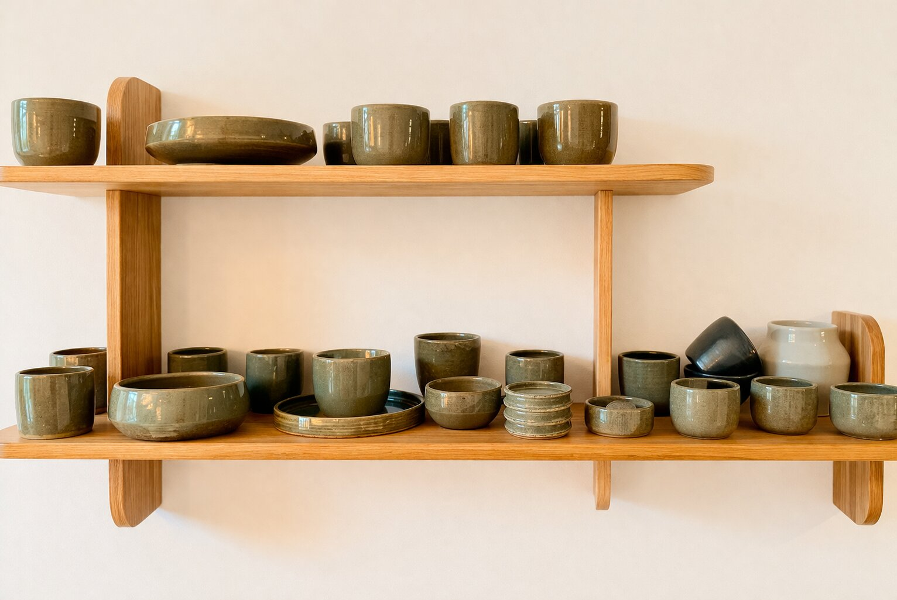

Alex le Potier
Ce qui est fait lentement reste.
Petites séries artisanales
Une démarche artisanale
Je façonne chaque pièce à la main en grès. Je privilégie les petites séries aux formes simples et fonctionnelles. Les cuissons sont réalisées au gaz en atmosphère réductrice, et prochainement également en four électrique en atmosphère oxydante, offrant des palettes de couleurs différentes. Chaque pièce porte ainsi de légères variations.

Commandes sur demande
Je réalise également des pièces en petites séries. Si vous recherchez un usage particulier, une idée précise ou un ensemble cohérent, nous pouvons en discuter. Chaque projet est étudié au cas par cas.
Pour les couleurs, je privilégie les émaux avec lesquels je travaille régulièrement. Le travail des émaux demande de nombreux essais et un temps de recherche important, ce qui limite les variations possibles.